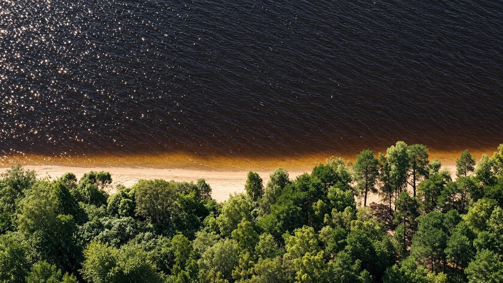

Единая территория рядом с лесом и водой

Рыбинский район · Ярославская область
Жизнь рядом с лесом и большой водой
Участки под индивидуальное жилищное строительство в месте, куда хочется возвращаться всей семьёй
Временный звук из референса — для публикации заменим записью клиента
Визуализация образа жизниДля строительства собственного жилого дома
Без посредников на стороне продавца
О проекте
«Новые Высока» — территория загородной жизни
Четыре квартала рядом с Высоковским бором объединены одной идеей: дать человеку собственное место у леса и воды, сохранив связь с Рыбинском и привычной инфраструктурой
Пройти маршрут одного дня ↓
Живой маршрут
Один день — много способов быть ближе к природе
Все природные и жизненные сценарии проекта собраны в одном маршруте
1 / 5
Листайте в сторону
- ♧Лесные прогулкиСосны, грибы и ягоды
- ⌁ВеломаршрутыПо лесным дорогам всей семьёй
- ≈Берег ВолгиПляж, купание и спокойный отдых
- ⚓Причал и водаРыбалка и лодочные прогулки
Фотографии показывают предполагаемый образ жизни и не являются изображением существующей инфраструктуры проекта
Новые Высока вживую
Увидеть место, прежде чем приехать
Фильм о проекте, короткие видео с территории и конкретные идеи для отдыха рядом с будущим домом
Короткие истории
Прогулка по территории вместе с основателем
Листайте ролики в сторону и открывайте тот, который хочется посмотреть
Расположение
Ближе к природе — из вашего города
Ярославская область, Рыбинский район. Ориентиры для поездки из Москвы, Ярославля и Рыбинска

≈ 300 кмиз Москвы
≈ 110 кмиз Ярославля
≈ 25 кмиз Рыбинска
Рядом с будущим домом
- Высоковский борПрогулки среди сосен
- Волга и берегМаршруты вдоль большой воды
- Николо-Кормская школаИнфраструктура в окружении проекта
- МагазинДля повседневных покупок
Расстояние до конкретного объекта зависит от выбранного участка. Его удобно оценить во время поездки
Договориться о поездке →Кварталы проекта
Выберите место для своего дома
Четыре квартала образуют один проект. У каждого — своё положение, окружение и варианты участков
Николо-Корма
Квартал рядом с Высоковским бором и маршрутом к воде
Узнать об участках →Чёрная речка
Информация о границах и участках будет добавлена после получения генплана
Оставить запрос →Заповедная аллея
Соединяет Николо-Корму с Высоковским бором и направлением к пляжу
Уточнить расположение →Дегтярицы
Квартал для выбора участка под постоянный дом или дачу
Узнать об участках →
Черновой генплан
Границы и участки появятся после получения материалов
Сейчас показываем только общую логику четырёх кварталовНиколо-Корма
Заповедная аллея
Дегтярицы
Чёрная речка
Условия покупки
Напрямую у собственника
Участки продаёт собственник. До сделки покупатель может ознакомиться с выпиской ЕГРН, категорией земли, видом разрешённого использования, границами участка и условиями договора. Команда объяснит документы простым языком и организует просмотр территории
Подобрать участок
Без участия банков
Рассрочка до 12 месяцев
Собственник предоставляет беспроцентную рассрочку по договору — без участия банка, банковской заявки и процентов
- 30%
- первоначальный взнос
- 12
- равных платежей на остаток
Познакомиться с местом
Приехать на просмотр кварталов или запросить видео конкретного участка
Изучить условия
Посмотреть документы, стоимость, форму оплаты и график платежей по рассрочке
Оформить участок
Подписать договор, внести первоначальный взнос и зарегистрировать право собственности

Дмитрий Родионовоснователь «Магазина Земли»
О компании
Создаём земельные проекты для жизни за городом
«Новые Высока» — собственный проект «Магазина Земли» по объединению территорий и последовательному развитию инфраструктуры. Команда больше десяти лет работает с землёй в Рыбинском районе и сопровождает покупателя от первого знакомства до оформления участка
В опыте команды — не только продажа земли, но и участие в строительстве и развитии загородных территорий Коприно и «Ярославского взморья». Поэтому проект рассматривают целиком: от юридической подготовки участков и подъездов до будущего сценария жизни рядом с лесом и Волгой
«Собственный участок земли становится надёжной опорой, с которой связаны уверенность в будущем, исполнение желаний и наследие семьи»
10 летопыта на рынке
1000+участков под разные задачи
400довольных клиентов
Почему мы
Пять причин обратиться в «Магазин Земли»
Нажмите на причину, чтобы узнать, что она даёт покупателю
Вопросы и ответы
Важное до выбора участка
Коротко о земле, электричестве и покупке в рассрочку
Какой вид разрешённого использования у участков?
Индивидуальное жилищное строительство, или ИЖС. На таком участке можно построить отдельно стоящий жилой дом. При проектировании учитываются местные правила застройки и ограничения конкретного участка
К какой категории относятся земли?
Участки относятся к землям населённых пунктов. Общее назначение земли определяет категория, а допустимое строительство — вид разрешённого использования и действующие ограничения
Как подключить электричество?
Заявка на технологическое присоединение подаётся в электронном виде через портал-тп.рф. Стоимость, сроки и перечень работ определяет сетевая организация
Как предоставляется рассрочка?
Рассрочку до 12 месяцев предоставляет собственник без участия банков. Первоначальный взнос составляет 30%, оставшиеся 70% выплачиваются 12 равными платежами по графику договора
Что такое ипотечное обременение?
До полного расчёта участок находится в залоге у продавца. Покупатель уже является собственником, а запись об обременении отражается в ЕГРН
Можно ли сдать участок в аренду при обременении?
Да, предварительно получив письменное согласие продавца-залогодержателя и соблюдая условия договора и разрешённое использование участка

Познакомиться с местом
Приезжайте выбрать своё место
Посмотрите кварталы, оцените подъезд и окружение. Если приехать пока не получается, запросите видео подходящего участка